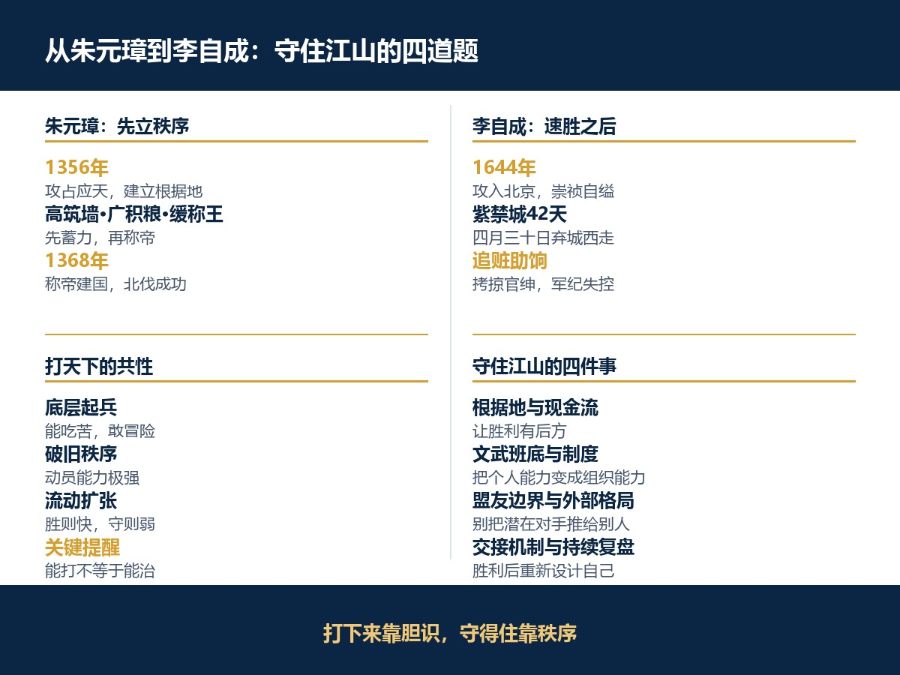

朱元璋放过牛、当过和尚、沿街乞讨，25 岁参加红巾军，16 年后在应天称帝；李自成做过驿卒，被裁后揭竿而起，十几年间把大明王朝推倒，1644 年攻入北京。两人都从最底层打到权力顶端，但结局截然不同：一个开创并守住近三百年的基业，一个在紫禁城只待了 42 天就仓皇西走。差别不在“能不能打”，而在“打下来之后有没有一套能接住胜利的秩序”。企业也是如此，很多公司不是死在低谷，而是死在第一次觉得自己赢了之后。

一、事实层面：同一条起跑线，完全不同的终点
朱元璋的起点极低。父母和兄长在灾荒瘟疫中去世，他无钱葬亲，进皇觉寺后又因寺中断粮而外出乞讨三年。1352 年，他投奔郭子兴的红巾军；1356 年攻占集庆，改名应天；随后采纳朱升“高筑墙，广积粮，缓称王”的策略，先用几年时间积蓄粮草、整肃军纪、招揽人才，再陆续击败陈友谅、张士诚。1368 年，他在应天称帝，国号大明，同年明军攻占大都。
称帝不是终点。朱元璋在位期间推行屯田、兴修水利、编订黄册与鱼鳞图册，减免赋税、恢复生产；政治上废除丞相和中书省，地方设三司分权，军事上实行卫所制度，并用严刑惩治贪官。晚年大杀功臣固然残酷，也暴露出他对权力失控的深层不安，但整套国家机器的框架已经搭起来。即便太子朱标早逝、皇太孙朱允炆年幼，明朝仍能延续，不是因为某一个人在撑，而是因为秩序已经沉淀下来。
李自成的起点同样低。他在驿站当差，崇祯年间驿站被裁后失去饭碗，又因军饷纠纷走上反抗道路。他打出“迎闯王，不纳粮”的口号，依靠流动作战和饥民动员迅速壮大。1644 年正月在西安建立大顺政权，三月十九日攻入北京，崇祯自缢。李自成骑乌骓马从德胜门入城，经承天门进入紫禁城，迎来一生最辉煌的时刻。
但这份辉煌只维持了 42 天。入京初期，大顺军军纪尚严，李自成也为崇祯举办葬礼、接纳明朝旧臣；很快，“追赃助饷”把打击对象从贪官扩展到官绅富户，夹棍拷掠、军纪松弛，原本可能转化为支持者的群体被推向对立面。四月十三日，李自成亲征山海关；吴三桂反戈并引清军入关，大顺军在一片石战败。四月二十九日，他在武英殿仓促称帝，次日弃城西走。从攻入北京到退出北京，前后只有 42 天。
二、归纳：打天下靠破局，守天下靠秩序
第一个差别，是有没有根据地。朱元璋长期经营应天，把它变成粮草、兵源、人才和行政体系的中心。他有时间试错，有后方补给，也有稳定的文官集团帮助他把军事胜利转成税收和户籍制度。李自成更像高速滚动的雪球，攻下城池却难以长期驻守，靠口号和没收维持供给。流动作战适合破城，不适合治国；胜利来得太快时，后方还没有建好，前线就已经失控。
第二个差别，是班底结构。朱元璋身边既有徐达、常遇春、李文忠等武将，也有李善长、刘伯温、朱升等文臣，形成“能打、能算、能管”的组合。李自成的核心班底更多是刘宗敏等一起出生入死的武将和后来投降的文臣，入京后缺乏统一的决策规则，刘宗敏甚至敢公开顶撞李自成“皇帝之权归汝，拷略之威归我”。打赢仗的兄弟，不自动变成治理国家的团队。
第三个差别，是胜利后的成本估计。朱元璋知道天下刚打完，百姓最需要休养生息，所以轻徭薄赋、屯田垦荒、恢复户籍；他也知道功臣可能威胁皇权，所以用制度清洗和集权来重算权力成本。做法残酷，但目标清楚。李自成把攻占北京当成终点，入京后的政策重心是筹饷和享乐，而不是建立税源、稳定士绅、安置军队、重建行政。胜利带来的资源被迅速消耗，带来的矛盾却迅速放大。
第四个差别，是外部格局。朱元璋面对的是元末群雄和北元残余，战略缓冲相对充足；李自成同时面对明朝残余、关外清军和吴三桂的边军，是三面对抗。山海关不是一座普通城关，而是中原与关外的咽喉。对这个变量的误判，让大顺政权在最脆弱的时候遭遇最强烈的外部冲击。个人胆识可以打穿旧王朝，却不能替代对地缘格局的判断。
三、企业为什么会守不住：四种常见的失守
第一种失守，是把创业期打法当成守成期制度。乐视在贾跃亭主导下用“生态化反”快速铺开电视、手机、汽车、体育等多条战线，叙事能力很强，但现金流和融资节奏跟不上，资金链危机迅速把生态故事压垮。恒大地产在高杠杆和多元化路径上长期扩张，债务压力叠加行业周期变化，最终演化为系统性危机。它们在上升期都证明过自己能打，却没有把速度转化为稳健的财务纪律。
第二种失守，是把个人权威当成组织能力。雷士照明的吴长江三次登顶、三次出局，销售渠道、资本方和董事会始终没能形成稳定绑定；真功夫的蔡达标与潘宇海围绕控制权长期内斗，把一家餐饮企业拖进治理泥潭；俏江南的张兰在与资本的对赌和引入中逐步失去控制。创始人强，不等于公司治理强。当权威只在一个人身上，企业就像一辆没有刹车系统的快车。
第三种失守，是在关键人物缺位时没有承接机制。国美电器创始人黄光裕入狱后，陈晓与董事会之间的控制权争斗把公司治理问题暴露在公众面前；同一时期，传统零售又面临电商冲击。内部权力真空与外部技术变局叠加，企业不仅失去掌舵者，也失去了节奏。很多公司平时回避接班人和授权设计，等到不得不面对时，成本已经非常高。
第四种失守，是把盟友和边界当成可以随意消耗的资源。李自成入京后拷掠官绅，把原本可能合作的力量推给对手；企业里类似的事情并不少见。创始团队分红不透明、供应商账期无限拉长、渠道政策朝令夕改、投资者回报长期失衡，短期看似“自己人多拿一点”，长期是在给竞争对手输送盟友。
四、也有守住的样子：把个人能力转成可交接的系统
华为没有上市，任正非也没有把公司变成个人英雄的纪念碑。轮值董事长制度、IPD 产品开发流程、供应链与人才梯队，使公司在面对外部极限压力时仍能保持组织运转。它守住的不是一个永不犯错的领导者，而是一套能持续纠偏的机制。
阿里通过合伙人制度和接班安排，把创始人的影响力逐步转化为组织治理的一部分。马云退场后，公司仍能继续运转，说明控制权与经营权之间已经有了制度通道。京东在刘强东经历个人风险后，通过股权与投票权安排保持长期影响力，同时让职业经理人团队承接日常经营。苹果在乔布斯回归后不只是靠一款产品翻身，而是重建产品聚焦、供应链和生态闭环；乔布斯离世后，公司仍能延续，靠的是系统性能力而非个人神话。
这些案例的共同点是：它们没有消灭创始人，而是给创始人的意志装上制度边界。真正的守成不是把权力锁在一个人手里，而是让组织在创始人不在场、市场变化、内部利益分化时，仍能做出相对稳定的决定。
五、我的结论：守江山要过四道关
第一道关是后方与现金流。李自成的失败提醒我们，增长如果没有可持续的财政基础，就会变成对存量的掠夺。企业也一样，收入增长不等于现金安全，规模扩大不等于抗风险能力。根据地思维放在今天，就是稳定的客户、可复制的产品、健康的现金流和清楚的成本结构。
第二道关是班底与制度。能打天下的人往往能力极强，但守天下需要的不只是能人，而是角色分工、决策规则、激励约束和信息透明。朱元璋靠文臣武将搭配建立国家机器，华为靠流程和轮值机制降低个人依赖。企业到了一定高度，最重要的不是再找一个更厉害的人，而是让一群人不靠私人关系也能协同。
第三道关是盟友边界与外部格局。李自成误判吴三桂和清军，企业误判政策、技术路线、供应链和资本市场，本质都是对外部变量缺乏敬畏。守江山的人必须持续更新地图，不能拿上一次胜利的地图走下一段路。
第四道关是交接与复盘。朱元璋晚年清洗功臣，短期为皇太孙扫路，长期却造成将才断层；这说明过度控制同样会削弱组织。企业在高速发展后，要提前设计接班、授权、纠错和退出机制，让权力可以平稳转移，让错误可以被及时暴露，而不是等危机来临时才发现无人可用。
六、趋势判断：从个人英雄转向可审计的组织能力
其一，创始人光环会继续褪色。资本市场和监管环境会更关注董事会结构、内控制度、现金流质量和接班安排。个人故事仍能带来关注，但不再能长期替代经营结果。
其二，高杠杆和过度多元化会被重新定价。过去靠规模叙事获得的支持，会转向对主业、现金流和合规的审视。企业扩张速度越快，越需要把财务纪律前置。
其三，组织韧性会成为核心指标。未来的较量不是谁跑得更快，而是谁在冲击后还能保持客户信任、供应链稳定和员工信心。制度、人才梯队与复盘能力，会从“后台工作”变成前台竞争力。
其四，对大湾区企业而言，产业学院和产教融合项目也会面临同样的“守成题”。签约和揭牌只是打天下，课程持续更新、企业订单稳定、学生就业可追踪、成果分配清楚，才是守天下。研究院在服务这类项目时，更应把一次性资源沉淀为长期机制。
结语
朱元璋和李自成都是从最底层打到顶端的人，都证明过胆识、韧性和破局能力的价值。区别在于，一个把胜利变成了制度，一个被胜利消耗。企业更是如此：打到某个高度后，最大的对手往往不是外部竞争者，而是自己过去赖以成功的习惯。
打下来靠胆识，守得住靠秩序。所谓秩序，不是把权力抓得更紧，而是让规则、人才、现金流、盟友关系和交接机制都能承接胜利。做不到这一点，登顶之日，可能就是下坡之始。
本文所引史实来自公开史料与公开报道，企业案例用于说明治理逻辑，相关分析为研究与趋势研判，不构成投资或经营建议。